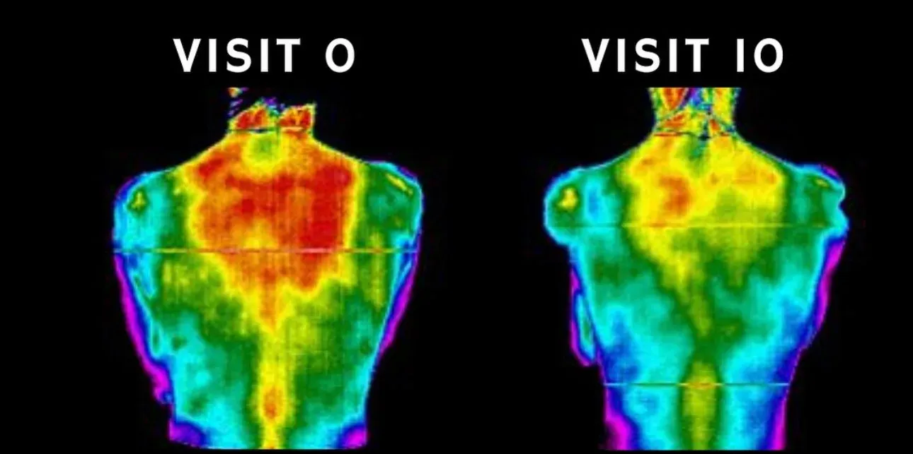
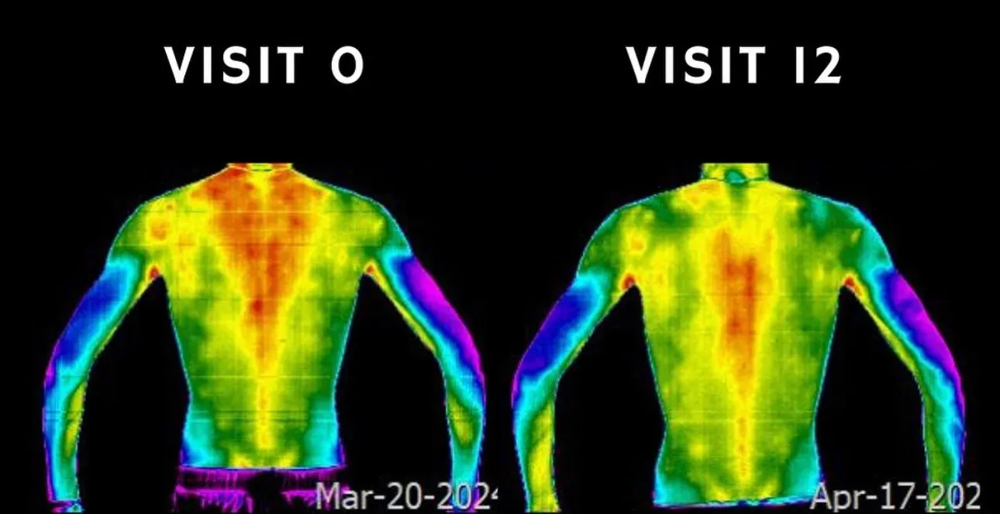
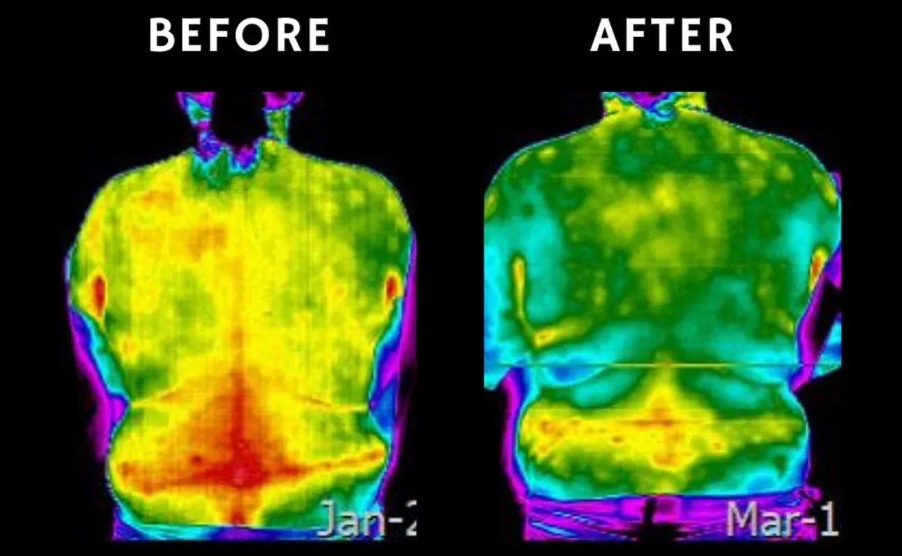
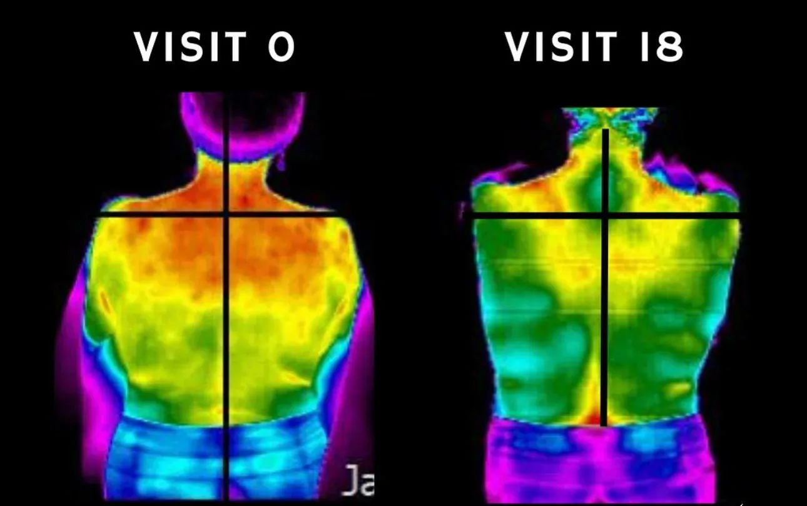
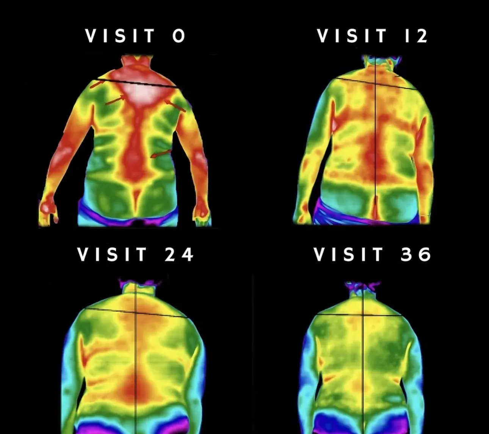
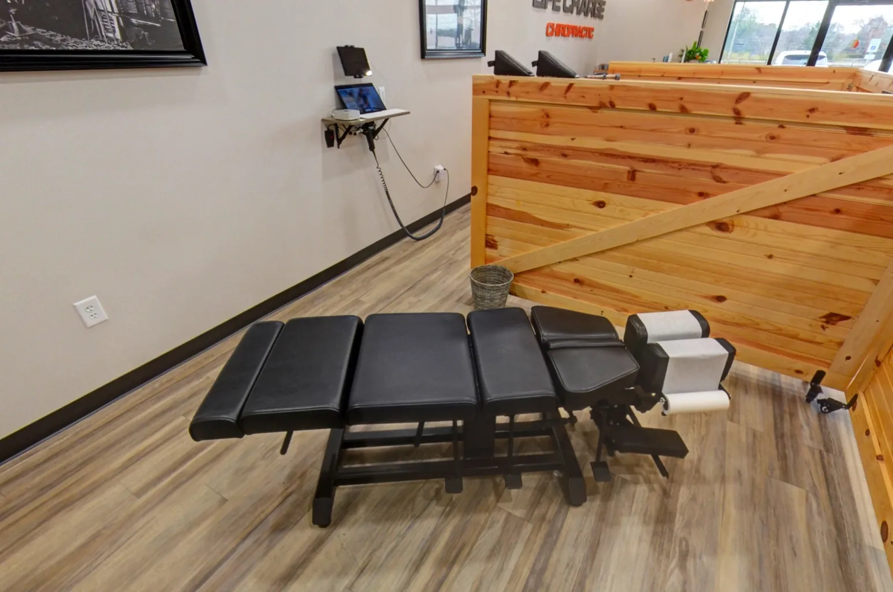

Thermal imaging gives us an objective look at how your nervous system is functioning, in color, in real time. It is not a replacement for an exam. It is a tool that helps us understand what the exam alone cannot show.
Thermal imaging, also called thermography, measures heat patterns on the surface of the skin. Because the nervous system regulates circulation and skin temperature, areas of imbalance or stress often show up as temperature differences across the body.
This gives us an objective, non-invasive window into how your nervous system is functioning, particularly in the areas served by the spine. Unlike X-rays, which show structure, thermal imaging reflects function. Together, they give us a much more complete picture.
Dr. Palmer Piana is a Board-Certified Thermologist and reads and writes thermal reports for doctors across the country. At Life Charge Chiropractic, thermal imaging is used thoughtfully, when it adds real clarity to your care, not routinely just because we have the technology.
Schedule First Visit
These scans show how surface temperature patterns may change over the course of care. Thermal imaging does not diagnose disease, but it can provide another objective way to observe patterns related to nervous system regulation and how the body is responding over time.




Real patient scans shown for educational purposes. Thermal imaging does not diagnose disease. Individual findings and results vary.
Individual experiences vary. Reviews reflect personal patient experiences and are not a guarantee of specific results.
Thermal imaging is one tool in a broader evaluation process. Here is how it fits into care at Life Charge Chiropractic.

"Better care starts with a clearer picture. Thermal imaging gives us another layer of that picture, one that shows how the nervous system is functioning, not just where the pain is."— Dr. Palmer Piana, Board-Certified Thermologist
Schedule a new patient exam at Life Charge Chiropractic. Thermal imaging available when clinically appropriate.
Schedule First Visit